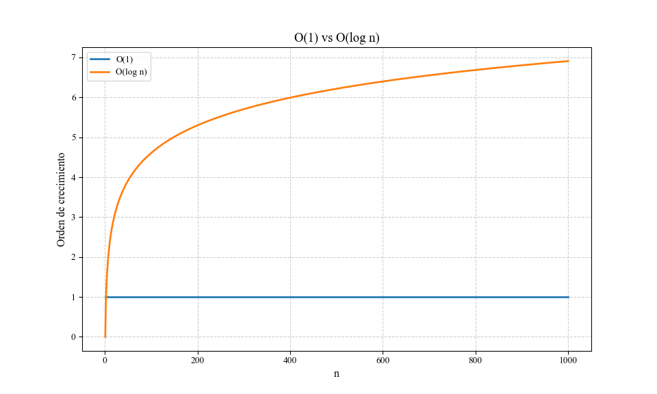
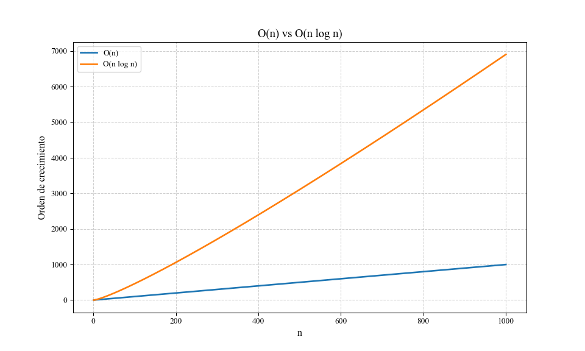
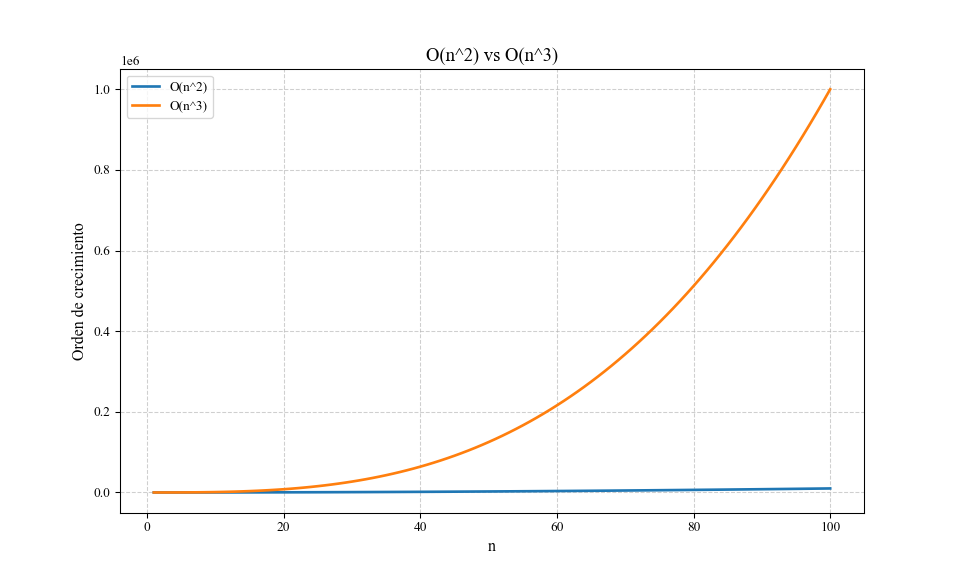
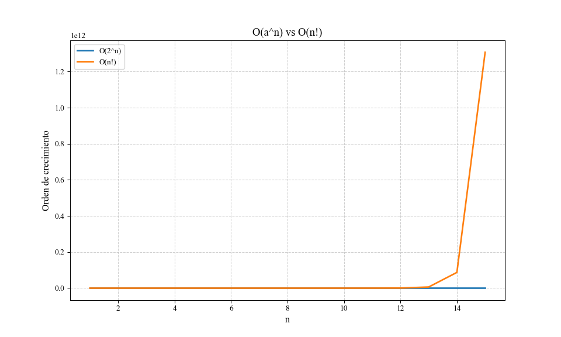
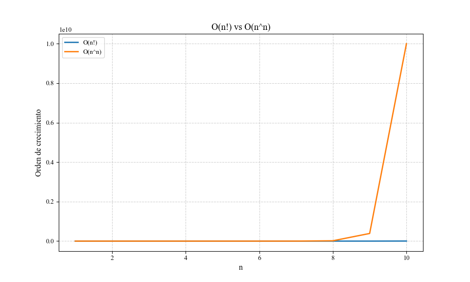

El análisis de algoritmos constituye un área fundamental en la informática, ya que permite comprender y predecir el rendimiento de soluciones computacionales en diferentes contextos. En este trabajo se estudiarán los principales órdenes de crecimiento que determinan la eficiencia de los algoritmos, contrastando tanto su impacto teórico como sus implicaciones prácticas a través de simulaciones y análisis visual. Este enfoque proporciona las herramientas necesarias para evaluar el costo computacional de las operaciones en función del tamaño de la entrada, un aspecto clave en el diseño y optimización de soluciones informáticas.
El crecimiento asintótico, como se detalla en Introduction to Algorithms (Cormen et al. 2022a), permite clasificar los algoritmos en términos de su rendimiento al trabajar con entradas de gran escala. La notación asintótica—incluyendo \(O\), Θ y Ω —es crucial para modelar estos comportamientos, ya que proporciona una descripción simplificada pero robusta del tiempo de ejecución y uso de recursos, independientemente de factores secundarios como la arquitectura de hardware o el lenguaje de programación utilizado.
Además, la relevancia de este análisis se extiende al impacto práctico que los algoritmos tienen en sistemas modernos. Según (Sedgewick y Wayne 2011), los algoritmos son fundamentales en diversas disciplinas, desde la inteligencia artificial hasta la computación gráfica, y su eficiencia puede ser el factor decisivo en el éxito o fracaso de una aplicación. Por su parte,(Kleinberg y Tardos 2006a) enfatizan que el análisis de algoritmos no solo implica evaluar su comportamiento en el peor caso, sino también en promedio y en el mejor caso, lo que proporciona una perspectiva más completa sobre su rendimiento en diferentes escenarios.
A lo largo de este documento se abordan las siguientes comparaciones de los órdenes de crecimiento:
\(O(1)\) vs \(O(log n)\)
\(O(n)\) vs \(O\)(\(n\) log \(n\))
\(O\)(\(n^2\)) vs \(O\)(\(n^3\))
\(O\)(\(a^n\)) vs \(O\)(\(n!\))
\(O\)(\(n!\)) vs \(O\)(\(n^n\))
Estos casos permiten identificar, tanto en la teoría como en la práctica, cómo diferentes algoritmos escalan con el tamaño de los datos de entrada. Según Cormen et al. (2022), este tipo de análisis no solo facilita una comparación objetiva entre alternativas algorítmicas, sino que también guía el diseño de soluciones eficientes en aplicaciones reales.
En términos aplicados, el análisis experimental complementa el teórico al proporcionar una validación práctica del comportamiento de los algoritmos bajo condiciones específicas. Las simulaciones incluidas en este trabajo se realizaron utilizando herramientas computacionales modernas que permiten graficar el rendimiento de los órdenes de crecimiento y calcular tiempos de ejecución simulados. Este enfoque, además de ser didáctico, pone en evidencia los límites prácticos de ciertos algoritmos, especialmente aquellos con un crecimiento exponencial o factorial, donde las operaciones se vuelven computacionalmente inviables incluso para tamaños moderados de entrada.
En síntesis, este trabajo no solo contextualiza los fundamentos teóricos del análisis de algoritmos, sino que también los aplica y analiza mediante experimentación computacional, logrando sintetizar las características más relevantes de cada orden de crecimiento. Este enfoque integral permite al lector comprender cómo los algoritmos pueden ser diseñados, seleccionados y evaluados para resolver problemas reales con una gestión óptima de los recursos computacionales.
4 Código utilizado
4.1 Importación de librerías
Se utilizará el lenguaje de programación Python para la demostración de los órdenes de crecimiento, para los requerimientos se importarán las librerías matplotlib para graficar los resultados, numpy para las operaciones matemáticas y pandas para el manejo de los datos.
Código
import matplotlib.pyplot as pltimport numpy as npimport pandas as pdimport mathplt.rcParams.update({"text.usetex": False, # No usar LaTeX"font.family": "serif", # Usa una fuente serif general"font.serif": "Times New Roman", # Alternativa compatible"font.size": 12,"axes.titlesize": 14,"axes.labelsize": 12,"xtick.labelsize": 10,"ytick.labelsize": 10,"legend.fontsize": 10,"figure.figsize": (6, 4),"grid.alpha": 0.6,"grid.linestyle": "--",})
4.2 Funciones de órdenes de crecimiento
Para mejor manejo del código se definirá una funcion para cada orden de crecimiento, como se muestra en el siguiente código:
Código
def o1(n):return np.ones_like(n) def ologn(n):return np.log(n) def on(n):return n def onlogn(n):return n * np.log(n) def on2(n):return n **2def on3(n):return n **3def a_n(n, a=2):return a ** n def nfact(n):return np.array([math.factorial(int(x)) for x in n]) def nn(n):return n ** n # O(n^n)
4.3 Eleccion del rango de valores de \(n\)
La teoría nos indica que los órdenes de crecimiento constante (\(O(1)\)) o logarítmico (\(O(log n)\)) son simples y de bajo costo, por lo que se crea un diccionario donde para el rango seleccionado para los órdenes de crecimiento simples es un rango aproximado de \(n=1000\) y conforme el orden de crecimiento se vuelva mas complejo el rango de \(n\) disminuye hasta \(n=10\).
Código
ranges = {"O(1) vs O(log n)": np.arange(1, 1001),"O(n) vs O(n log n)": np.arange(1, 1001),"O(n^2) vs O(n^3)": np.arange(1, 101),"O(a^n) vs O(n!)": np.arange(1, 16), "O(n!) vs O(n^n)": np.arange(1, 11) }comparisons = [ ("O(1)", o1, "O(log n)", ologn), ("O(n)", on, "O(n log n)", onlogn), ("O(n^2)", on2, "O(n^3)", on3), ("O(2^n)", lambda n: a_n(n, 2), "O(n!)", nfact), ("O(n!)", nfact, "O(n^n)", nn)]
4.4 Generación de gráficas
Para el caso de las gráficas se utilizará la librería de matplotlib, para generar las gráficas de cada comparación de orden de crecimiento y su respectivo análisis.
nanosecond =1e-9tamanos = [10,20,30,100, 1000, 10000, 100000]tiempo_simulado = pd.DataFrame({"Tamano": pd.Series(dtype=int),"O(1)": pd.Series(dtype=float),"O(logn)": pd.Series(dtype=float),"O(n)": pd.Series(dtype=float),"O(nlogn)": pd.Series(dtype=float),"O(n^2)": pd.Series(dtype=float),"O(n^3)": pd.Series(dtype=float),"O(a^n)": pd.Series(dtype=object), "O(n!)": pd.Series(dtype=object),"O(n^n)": pd.Series(dtype=object) })for n in tamanos: tiempo_simulado = pd.concat([ tiempo_simulado, pd.DataFrame({"Tamano": [n],"O(1)": [nanosecond],"O(logn)": [nanosecond * np.log(n)],"O(n)": [nanosecond * n],"O(nlogn)": [nanosecond * n * np.log(n)],"O(n^2)": [nanosecond * n**2],"O(n^3)": [nanosecond * n**3],"O(a^n)": [nanosecond *2**n if n<1000else"Overflow" ], "O(n!)": [nanosecond * math.factorial(n) if n<31else"Overflow"], "O(n^n)": [nanosecond * n**n if n<31else"Overflow"], }) ], ignore_index=True)pd.set_option("display.max_rows", None)pd.set_option("display.max_columns", None)tiempo_simulado.columns = [ col.replace("^", r"\^").replace("_", r"\_") for col in tiempo_simulado.columns]latex_code =r"""\begin{table}[H]\centering\resizebox{0.85\textwidth}{!}{%"""+ tiempo_simulado.to_latex(index=False, escape=False) +r"""}\caption{Tiempos simulados para diferentes ordenes de crecimiento.}\label{tab:tiempos_simulados}\end{table}"""withopen("tabla_tiempos.tex", "w") as f: f.write(latex_code)
5 Resultados y Discusión
A continuación se presentan las gráficas obtenidas para cada comparación de órdenes de crecimiento, acompañadas de un análisis correspondiente.
5.1\(O\)(1) vs \(O\)(log \(n\))

Comparación \(O(1)\) vs \(O\)(log \(n\))
En la Figura 1, se observa cómo el orden constante \(O\)(1) se mantiene invariable independientemente del tamaño de entrada, mientras que ( \(O\)(log \(n\)) ) crece lentamente a medida que aumenta el tamaño de la entrada, un ejemplo de una función que tenga un orden de crecimiento logarítmico podría ser la búsqueda binaria en una lista ordenada. El orden de crecimiento constante denota que no importa el tamaño de la entrada; el tiempo de ejecución es el mismo, un ejemplo de esto podria ser el acceder al primer elemento de una lista.
5.2\(O(n)\) vs \(O\)(\(n\) log \(n\))

Comparación \(O(n)\) vs \(O\)(\(n\) log \(n\))
En la Figura 2 se compara el crecimiento lineal (\(O(n)\)) con el crecimiento lineal logarítmico (\(O\)(\(n\) log \(n\))), en el primero el tiempo de ejecución crece proporcionalmente al tamaño de la entrada, mientras que el crecimiento lineal logarítmico a entradas más grandes el tiempo de ejecución aumenta varias veces en comparación con el crecimiento lineal. Por dar ejemplos de cada uno un algoritmo de crecimiento lineal puede ser un algoritmo de búsqueda que recorre una lista para encontrar un elemento, mientras que un algoritmo de crecimiento lineal logarítmico es común en algoritmos de ordenamiento, como Merge Sort.
5.3\(O\)(\(n^2\)) vs \(O\)(\(n^3\))

Comparación \(O\)(\(n^2\)) vs \(O\)(\(n^3\))
La comparación del crecimiento cuadrático y el crecimiento cúbico se observan en la figura 3. Según sea el caso, el tiempo de ejecucion crece con el cuadrado o el cubo del tamaño de la entrada. Siendo que el crecimiento cúbico alcanza mayores tiempos de ejecución con menores tamaños de entrada. El crecimiento cuadrático se puede observar en algoritmos de ordenamiento simples como Bubble Sort, mientras que el crecimiento cúbico es común en algoritmos que involucran múltiples bucles anidados procesando una matriz tridimensional.
5.4\(O\)(\(a^n\)) vs \(O\)(\(n!\))

Comparación \(O\)(\(a^n\)) vs \(O\)(\(n!\))
En el caso de la comparación del crecimiento exponencial con base a y el crecimiento factorial. Los algoritmos de crecimiento factorial son más rapidos que los de crecimiento exponencial ya que, ambos crecen rápidamente aunque con pequeños tamaños de de entrada se ve una clara aceleración de crecimiento de parte del algoritmo factorial. Ambos crecen rápidamente, y llegan al punto de que el tiempo de ejecución aumenta tanto que los algoritmos se vuelven imprácticos por su alto tiempo de ejecución, para el crecimiento exponencial con base a se puede decir que si \(n>20\) el tiempo de ejecución se vuelve impráctico para muchas aplicaciones, mientras que para el crecimiento factorial que crece más rápido despúes del punto que n>10 se vuelve impráctico, tal como se aprecia en la gráfica que con un tamaño de entrada \(n>13\) el tiempo de ejecución esta en el orden de \(x10^{12}\). Un ejemplo de crecimiento exponencial con base a son los algoritmos recursivos que exploran árboles de decisión, los cuales tienen un patrón que generan todas las combinaciones posibles de elementos, mientras que los algoritmos con crecimiento factorial es común en problemas de permutación donde se considera cada orden posible de los elementos.
5.5\(O\)(\(n!\)) vs \(O\)(\(n^n\))

Comparación \(O\)(\(n!\)) vs \(O\)(\(n^n\))
Finalmente, el crecimiento exponencial aumenta extremadamente rápido, y de igual manera se vuelve impráctico para muchas aplicaciónes con tamaños de entrada pequeños siendo para \(n>8\) que el tiempo de ejecución se vuelve muy grande, esto es más rápido que el crecimiento factorial analizado en la Figura 5. Dentro de lo que cabe es un patrón de crecimiento raro que ocurre cuando cada elemento de una entrada puede tomar \(n\) posibles valores y las combinaciones de todos los elementos deben evaluarse
5.6 Tabla de tiempos simulados
La tabla presentada muestra los tiempos simulados para algoritmos con diferentes órdenes de crecimiento (\(O(1)\), \(O(log n)\), \(O(n)\), \(O(log(n))\), \(O\)(\(n^2\)), \(O\)(\(n^3\)), \(O\)(\(a^n\)), \(O\)(\(n!\)), \(O\)(\(n^n\))) en función del tamaño de entrada (\(n\)). Los valores se expresan en nanosegundos, simulando el costo computacional con una operación básica que toma 1 ns (\(10^-9\) s).
De la tabla 1 se puede concluir lo siguiente:
1. \(O(1)\) y \(O\)(log \(n\)) son los órdenes de crecimiento más eficientes, ya que el tiempo de ejecución es constante para el caso de \(O(1)\) o crece muy lentamente a medida que \(n\) aumenta. Esto hace que ambos sean ideales para problemas que requieren alta eficiencia y escalabilidad, incluso con grandes volúmenes de datos.
2. \(O(n)\) y \(O\)(\(n\) log \(n\)) aunque son menos eficientes que los órdenes de crecimiento anteriores, estos siguen siendo adecuados para problemas prácticos en aplicaciones de procesamiento de datos algoritmos de búsqueda ordenamiento.
3. Los órdenes de crecimiento polinomiales \(O\)(\(n^2\)) y \(O\)(\(n^3\)) siguen siendo manejables pero limitados a tamaños de entrada pequeños o moderados, y su uso en las aplicaciones prácticas debe evaluarse con cuidado.
4. Los órdenes de crecimiento exponenciales y factoriales (\(O\)(\(a^n\)), \(O\)(\(n!\)), \(O\)(\(n^n\))) son inaplicables para problemas con tamaños de entrada moderados a grandes, y su uso se limita a casos extremadamente pequeños o análisis teóricos. Ya que el orden de crecimiento \(O\)(\(a^n\)) para un tamaño de 100 se obtiene un numero del orden de \(1x10^{22}\) ns (\(1x10^{13}\) s lo equivalente a 317,000 años). Para el orden de crecimiento \(O\)(\(n!\)), desde el tamaño de \(n=30\) se obtiene un tiempo de ejecución en el orden de \(1X10^{15}\) segundos (equivalente a 31 millones de años), y finalmente para el orden de crecimiento de \(O\)(\(n^n\)) el tiempo de ejecución con un tamaño de n=30 es del orden de los \(1X10^{25}\) segundos, lo que equivale a 317,000,000 de eones.
6 Conclusiones
Órdenes altamente eficientes ( \(O(1)\) y \(O\)(log \(n\))): Estos órdenes destacan por su eficiencia y bajo impacto en el costo computacional, incluso con entradas grandes. \(O(1)\) permite tiempos constantes, como en el acceso a estructuras indexadas, mientras que \(O\)(log \(n\))), característico de búsquedas binarias, crece lentamente a medida que aumenta el tamaño de entrada, como señalan (Cormen et al. 2022b) y (Goodrich y Tamassia 2014). Su escalabilidad los convierte en las mejores opciones para sistemas que manejan grandes volúmenes de datos, como bases de datos o algoritmos de búsqueda en tiempo real.
Órdenes prácticos (\(O(n)\) y \(O(\)n log \(n\))): Estos órdenes muestran un crecimiento significativo en el tiempo de ejecución conforme aumenta \(n\). \(O\)(\(n^2\)) es típico en algoritmos simples como Bubble Sort, mientras que \(O\)(\(n^3\)) se encuentra en problemas como la multiplicación de matrices estándar. Como destacan (Kleinberg y Tardos 2006b) y (Dasgupta, Papadimitriou, y Vazirani 2006), estos algoritmos son útiles para problemas educativos o de pequeña escala, pero su aplicabilidad en sistemas con grandes volúmenes de datos es limitada.
Órdenes polinomiales (\(O\)(\(n^2\)) y \(O\)(\(n^3\))): Aunque estos órdenes son significativamente más lentos, pueden ser útiles en problemas de escala moderada o cuando no existen alternativas más eficientes. Sin embargo, su crecimiento rápido limita su aplicabilidad en escenarios con datos masivos.
Órdenes exponenciales y factoriales (\(O\)(\(a^n\)), \(O\)(\(n!\)) y \(O\)(\(n^n\))): Estos órdenes tienen un crecimiento extremadamente rápido que los hace imprácticos incluso para tamaños de entrada pequeños. En aplicaciones reales, no son fáctibles para volúmenes de datos moderados a grandes y se limitan a análisis teóricos o casos donde \(n\) es muy reducido.
Casos extremos y variables asintóticamente grandes: Los algoritmos con órdenes como \(O\)(\(n!\)) y \(O\)(\(n^n\)) enfrentan barreras físicas y computacionales debido al tiempo y recursos requeridos. Estas complejidades resaltan la importancia de recurrir a enfoques alternativos, como heurísticas o aproximaciones, en problemas complejos donde el tamaño de la entrada crece exponencialmente.
Simulación y análisis práctico: Las simulaciones realizadas muestran que, si bien los órdenes bajos y medios son útiles y escalables, los órdenes altos y extremos (exponenciales y factoriales) no son prácticos para aplicaciones computacionales. Esto subraya la necesidad de elegir algoritmos con un análisis previo de su comportamiento teórico y práctico.
Conclusión general: El análisis y las simulaciones confirman que la elección del algoritmo depende directamente de su orden de crecimiento, especialmente en escenarios con grandes volúmenes de datos. Como destacan (Dasgupta, Papadimitriou, y Vazirani 2006), diseñar algoritmos eficientes implica priorizar órdenes bajos (\(O(1)\) , \(O\)(log \(n\))) y evitar órdenes altos en problemas de escala, donde los recursos computacionales son limitados.
6.1 Lista de Cambios
Se corrigieron fallas errores ortográficos
Se corrifieron errores de palabras repetidas o redundantes
Se corrigieron referencias a figuras y tablas dentro del documento.
7 Bibliografía
Cormen, Thomas H., Charles E. Leiserson, Ronald L. Rivest, y Clifford Stein. 2022a. Introduction To Algorithms. 2a ed. MIT Press.
———. 2022b. Introduction To Algorithms. 2a ed. MIT Press.
Dasgupta, Sanjoy, Christos H. Papadimitriou, y Umesh Virkumar Vazirani. 2006. Algorithms. McGraw-Hill Higher Education.
Goodrich, Michael T., y Roberto Tamassia. 2014. Algorithm Design and Applications. Wiley.
Kleinberg, Jon, y Éva Tardos. 2006a. Algorithm Design. Pearson/Addison-Wesley.
Sedgewick, Robert, y Kevin Wayne. 2011. Algorithms. Addison-Wesley Professional.
Ejecutar el código
---title: "1A Reporte escrito. Experimentos y análisis"author: "José Francisco Cázares Marroquín"date: "01/12/2025"format: html: toc: true lang: es-MX number-sections: true code-fold: true theme: cosmo css: styles.cssexecute: output: false warning: falsebibliography: references1.bib---# IntroducciónEl análisis de algoritmos constituye un área fundamental en la informática, ya que permite comprender y predecir el rendimiento de soluciones computacionales en diferentes contextos. En este trabajo se estudiarán los principales órdenes de crecimiento que determinan la eficiencia de los algoritmos, contrastando tanto su impacto teórico como sus implicaciones prácticas a través de simulaciones y análisis visual. Este enfoque proporciona las herramientas necesarias para evaluar el costo computacional de las operaciones en función del tamaño de la entrada, un aspecto clave en el diseño y optimización de soluciones informáticas.El crecimiento asintótico, como se detalla en Introduction to Algorithms [@cormen2022], permite clasificar los algoritmos en términos de su rendimiento al trabajar con entradas de gran escala. La notación asintótica—incluyendo $O$, Θ y Ω —es crucial para modelar estos comportamientos, ya que proporciona una descripción simplificada pero robusta del tiempo de ejecución y uso de recursos, independientemente de factores secundarios como la arquitectura de hardware o el lenguaje de programación utilizado.Además, la relevancia de este análisis se extiende al impacto práctico que los algoritmos tienen en sistemas modernos. Según [@sedgewick2011], los algoritmos son fundamentales en diversas disciplinas, desde la inteligencia artificial hasta la computación gráfica, y su eficiencia puede ser el factor decisivo en el éxito o fracaso de una aplicación. Por su parte,[@kleinberg2006] enfatizan que el análisis de algoritmos no solo implica evaluar su comportamiento en el peor caso, sino también en promedio y en el mejor caso, lo que proporciona una perspectiva más completa sobre su rendimiento en diferentes escenarios.A lo largo de este documento se abordan las siguientes comparaciones de los órdenes de crecimiento:a. $O(1)$ vs $O(log n)$b. $O(n)$ vs $O$($n$ log $n$)c. $O$($n^2$) vs $O$($n^3$)d. $O$($a^n$) vs $O$($n!$)e. $O$($n!$) vs $O$($n^n$)Estos casos permiten identificar, tanto en la teoría como en la práctica, cómo diferentes algoritmos escalan con el tamaño de los datos de entrada. Según Cormen et al. (2022), este tipo de análisis no solo facilita una comparación objetiva entre alternativas algorítmicas, sino que también guía el diseño de soluciones eficientes en aplicaciones reales.En términos aplicados, el análisis experimental complementa el teórico al proporcionar una validación práctica del comportamiento de los algoritmos bajo condiciones específicas. Las simulaciones incluidas en este trabajo se realizaron utilizando herramientas computacionales modernas que permiten graficar el rendimiento de los órdenes de crecimiento y calcular tiempos de ejecución simulados. Este enfoque, además de ser didáctico, pone en evidencia los límites prácticos de ciertos algoritmos, especialmente aquellos con un crecimiento exponencial o factorial, donde las operaciones se vuelven computacionalmente inviables incluso para tamaños moderados de entrada.En síntesis, este trabajo no solo contextualiza los fundamentos teóricos del análisis de algoritmos, sino que también los aplica y analiza mediante experimentación computacional, logrando sintetizar las características más relevantes de cada orden de crecimiento. Este enfoque integral permite al lector comprender cómo los algoritmos pueden ser diseñados, seleccionados y evaluados para resolver problemas reales con una gestión óptima de los recursos computacionales.# Código utilizado## Importación de libreríasSe utilizará el lenguaje de programación Python para la demostración de los órdenes de crecimiento, para los requerimientos se importarán las librerías matplotlib para graficar los resultados, numpy para las operaciones matemáticas y pandas para el manejo de los datos.```{python}import matplotlib.pyplot as pltimport numpy as npimport pandas as pdimport mathplt.rcParams.update({"text.usetex": False, # No usar LaTeX"font.family": "serif", # Usa una fuente serif general"font.serif": "Times New Roman", # Alternativa compatible"font.size": 12,"axes.titlesize": 14,"axes.labelsize": 12,"xtick.labelsize": 10,"ytick.labelsize": 10,"legend.fontsize": 10,"figure.figsize": (6, 4),"grid.alpha": 0.6,"grid.linestyle": "--",})```## Funciones de órdenes de crecimientoPara mejor manejo del código se definirá una funcion para cada orden de crecimiento, como se muestra en el siguiente código:```{python}def o1(n):return np.ones_like(n) def ologn(n):return np.log(n) def on(n):return n def onlogn(n):return n * np.log(n) def on2(n):return n **2def on3(n):return n **3def a_n(n, a=2):return a ** n def nfact(n):return np.array([math.factorial(int(x)) for x in n]) def nn(n):return n ** n # O(n^n)```## Eleccion del rango de valores de $n$La teoría nos indica que los órdenes de crecimiento constante ($O(1)$) o logarítmico ($O(log n)$) son simples y de bajo costo, por lo que se crea un diccionario donde para el rango seleccionado para los órdenes de crecimiento simples es un rango aproximado de $n=1000$ y conforme el orden de crecimiento se vuelva mas complejo el rango de $n$ disminuye hasta $n=10$.```{python}ranges = {"O(1) vs O(log n)": np.arange(1, 1001),"O(n) vs O(n log n)": np.arange(1, 1001),"O(n^2) vs O(n^3)": np.arange(1, 101),"O(a^n) vs O(n!)": np.arange(1, 16), "O(n!) vs O(n^n)": np.arange(1, 11) }comparisons = [ ("O(1)", o1, "O(log n)", ologn), ("O(n)", on, "O(n log n)", onlogn), ("O(n^2)", on2, "O(n^3)", on3), ("O(2^n)", lambda n: a_n(n, 2), "O(n!)", nfact), ("O(n!)", nfact, "O(n^n)", nn)]```## Generación de gráficasPara el caso de las gráficas se utilizará la librería de matplotlib, para generar las gráficas de cada comparación de orden de crecimiento y su respectivo análisis.```{python}import osos.makedirs("images", exist_ok=True)for (label1, func1, label2, func2), range_key inzip(comparisons, ranges.keys()): n_values = ranges[range_key] y1 = func1(n_values) y2 = func2(n_values) safe_name = range_key.replace(' ', '_').replace('/', '_').replace('^', '').replace('%', '') plt.figure(figsize=(10, 6)) plt.plot(n_values, y1, label=label1, linewidth=2) plt.plot(n_values, y2, label=label2, linewidth=2) plt.xlabel("n") plt.ylabel("Orden de crecimiento") plt.title(range_key) plt.legend() plt.grid(True) plt.savefig(f"images/{safe_name}.png") plt.close()``````{python}nanosecond =1e-9tamanos = [10,20,30,100, 1000, 10000, 100000]tiempo_simulado = pd.DataFrame({"Tamano": pd.Series(dtype=int),"O(1)": pd.Series(dtype=float),"O(logn)": pd.Series(dtype=float),"O(n)": pd.Series(dtype=float),"O(nlogn)": pd.Series(dtype=float),"O(n^2)": pd.Series(dtype=float),"O(n^3)": pd.Series(dtype=float),"O(a^n)": pd.Series(dtype=object), "O(n!)": pd.Series(dtype=object),"O(n^n)": pd.Series(dtype=object) })for n in tamanos: tiempo_simulado = pd.concat([ tiempo_simulado, pd.DataFrame({"Tamano": [n],"O(1)": [nanosecond],"O(logn)": [nanosecond * np.log(n)],"O(n)": [nanosecond * n],"O(nlogn)": [nanosecond * n * np.log(n)],"O(n^2)": [nanosecond * n**2],"O(n^3)": [nanosecond * n**3],"O(a^n)": [nanosecond *2**n if n<1000else"Overflow" ], "O(n!)": [nanosecond * math.factorial(n) if n<31else"Overflow"], "O(n^n)": [nanosecond * n**n if n<31else"Overflow"], }) ], ignore_index=True)pd.set_option("display.max_rows", None)pd.set_option("display.max_columns", None)tiempo_simulado.columns = [ col.replace("^", r"\^").replace("_", r"\_") for col in tiempo_simulado.columns]latex_code =r"""\begin{table}[H]\centering\resizebox{0.85\textwidth}{!}{%"""+ tiempo_simulado.to_latex(index=False, escape=False) +r"""}\caption{Tiempos simulados para diferentes ordenes de crecimiento.}\label{tab:tiempos_simulados}\end{table}"""withopen("tabla_tiempos.tex", "w") as f: f.write(latex_code)```# Resultados y DiscusiónA continuación se presentan las gráficas obtenidas para cada comparación de órdenes de crecimiento, acompañadas de un análisis correspondiente.## $O$(1) vs $O$(log $n$)_vs_O(log_n).png){#CTELOG fig-align="center"}En la Figura 1, se observa cómo el orden constante $O$(1) se mantiene invariable independientemente del tamaño de entrada, mientras que ( $O$(log $n$) ) crece lentamente a medida que aumenta el tamaño de la entrada, un ejemplo de una función que tenga un orden de crecimiento logarítmico podría ser la búsqueda binaria en una lista ordenada. El orden de crecimiento constante denota que no importa el tamaño de la entrada; el tiempo de ejecución es el mismo, un ejemplo de esto podria ser el acceder al primer elemento de una lista.## $O(n)$ vs $O$($n$ log $n$)_vs_O(n_log_n).png)En la Figura 2 se compara el crecimiento lineal ($O(n)$) con el crecimiento lineal logarítmico ($O$($n$ log $n$)), en el primero el tiempo de ejecución crece proporcionalmente al tamaño de la entrada, mientras que el crecimiento lineal logarítmico a entradas más grandes el tiempo de ejecución aumenta varias veces en comparación con el crecimiento lineal. Por dar ejemplos de cada uno un algoritmo de crecimiento lineal puede ser un algoritmo de búsqueda que recorre una lista para encontrar un elemento, mientras que un algoritmo de crecimiento lineal logarítmico es común en algoritmos de ordenamiento, como Merge Sort.## $O$($n^2$) vs $O$($n^3$)_vs_O(n3).png)La comparación del crecimiento cuadrático y el crecimiento cúbico se observan en la figura 3. Según sea el caso, el tiempo de ejecucion crece con el cuadrado o el cubo del tamaño de la entrada. Siendo que el crecimiento cúbico alcanza mayores tiempos de ejecución con menores tamaños de entrada. El crecimiento cuadrático se puede observar en algoritmos de ordenamiento simples como Bubble Sort, mientras que el crecimiento cúbico es común en algoritmos que involucran múltiples bucles anidados procesando una matriz tridimensional.## $O$($a^n$) vs $O$($n!$)_vs_O(n!).png)En el caso de la comparación del crecimiento exponencial con base a y el crecimiento factorial. Los algoritmos de crecimiento factorial son más rapidos que los de crecimiento exponencial ya que, ambos crecen rápidamente aunque con pequeños tamaños de de entrada se ve una clara aceleración de crecimiento de parte del algoritmo factorial. Ambos crecen rápidamente, y llegan al punto de que el tiempo de ejecución aumenta tanto que los algoritmos se vuelven imprácticos por su alto tiempo de ejecución, para el crecimiento exponencial con base a se puede decir que si $n>20$ el tiempo de ejecución se vuelve impráctico para muchas aplicaciones, mientras que para el crecimiento factorial que crece más rápido despúes del punto que n\>10 se vuelve impráctico, tal como se aprecia en la gráfica que con un tamaño de entrada $n>13$ el tiempo de ejecución esta en el orden de $x10^{12}$. Un ejemplo de crecimiento exponencial con base a son los algoritmos recursivos que exploran árboles de decisión, los cuales tienen un patrón que generan todas las combinaciones posibles de elementos, mientras que los algoritmos con crecimiento factorial es común en problemas de permutación donde se considera cada orden posible de los elementos.## $O$($n!$) vs $O$($n^n$)_vs_O(nn).png)Finalmente, el crecimiento exponencial aumenta extremadamente rápido, y de igual manera se vuelve impráctico para muchas aplicaciónes con tamaños de entrada pequeños siendo para $n>8$ que el tiempo de ejecución se vuelve muy grande, esto es más rápido que el crecimiento factorial analizado en la Figura 5. Dentro de lo que cabe es un patrón de crecimiento raro que ocurre cuando cada elemento de una entrada puede tomar $n$ posibles valores y las combinaciones de todos los elementos deben evaluarse## Tabla de tiempos simuladosLa tabla presentada muestra los tiempos simulados para algoritmos con diferentes órdenes de crecimiento ($O(1)$, $O(log n)$, $O(n)$, $O(log(n))$, $O$($n^2$), $O$($n^3$), $O$($a^n$), $O$($n!$), $O$($n^n$)) en función del tamaño de entrada ($n$). Los valores se expresan en nanosegundos, simulando el costo computacional con una operación básica que toma 1 ns ($10^-9$ s).```{=latex}\input{tabla_tiempos.tex}```De la tabla 1 se puede concluir lo siguiente:1\. $O(1)$ y $O$(log $n$) son los órdenes de crecimiento más eficientes, ya que el tiempo de ejecución es constante para el caso de $O(1)$ o crece muy lentamente a medida que $n$ aumenta. Esto hace que ambos sean ideales para problemas que requieren alta eficiencia y escalabilidad, incluso con grandes volúmenes de datos.2\. $O(n)$ y $O$($n$ log $n$) aunque son menos eficientes que los órdenes de crecimiento anteriores, estos siguen siendo adecuados para problemas prácticos en aplicaciones de procesamiento de datos algoritmos de búsqueda ordenamiento.3\. Los órdenes de crecimiento polinomiales $O$($n^2$) y $O$($n^3$) siguen siendo manejables pero limitados a tamaños de entrada pequeños o moderados, y su uso en las aplicaciones prácticas debe evaluarse con cuidado.4\. Los órdenes de crecimiento exponenciales y factoriales ($O$($a^n$), $O$($n!$), $O$($n^n$)) son inaplicables para problemas con tamaños de entrada moderados a grandes, y su uso se limita a casos extremadamente pequeños o análisis teóricos. Ya que el orden de crecimiento $O$($a^n$) para un tamaño de 100 se obtiene un numero del orden de $1x10^{22}$ ns ($1x10^{13}$ s lo equivalente a 317,000 años). Para el orden de crecimiento $O$($n!$), desde el tamaño de $n=30$ se obtiene un tiempo de ejecución en el orden de $1X10^{15}$ segundos (equivalente a 31 millones de años), y finalmente para el orden de crecimiento de $O$($n^n$) el tiempo de ejecución con un tamaño de n=30 es del orden de los $1X10^{25}$ segundos, lo que equivale a 317,000,000 de eones.# Conclusiones1. Órdenes altamente eficientes ( $O(1)$ y $O$(log $n$)): Estos órdenes destacan por su eficiencia y bajo impacto en el costo computacional, incluso con entradas grandes. $O(1)$ permite tiempos constantes, como en el acceso a estructuras indexadas, mientras que $O$(log $n$)), característico de búsquedas binarias, crece lentamente a medida que aumenta el tamaño de entrada, como señalan [@cormen2022a] y [@goodrich2014]. Su escalabilidad los convierte en las mejores opciones para sistemas que manejan grandes volúmenes de datos, como bases de datos o algoritmos de búsqueda en tiempo real.2. Órdenes prácticos ($O(n)$ y $O($n log $n$)): Estos órdenes muestran un crecimiento significativo en el tiempo de ejecución conforme aumenta $n$. $O$($n^2$) es típico en algoritmos simples como Bubble Sort, mientras que $O$($n^3$) se encuentra en problemas como la multiplicación de matrices estándar. Como destacan [@kleinberg2006a] y [@dasgupta2006], estos algoritmos son útiles para problemas educativos o de pequeña escala, pero su aplicabilidad en sistemas con grandes volúmenes de datos es limitada.3. Órdenes polinomiales ($O$($n^2$) y $O$($n^3$)): Aunque estos órdenes son significativamente más lentos, pueden ser útiles en problemas de escala moderada o cuando no existen alternativas más eficientes. Sin embargo, su crecimiento rápido limita su aplicabilidad en escenarios con datos masivos.4. Órdenes exponenciales y factoriales ($O$($a^n$), $O$($n!$) y $O$($n^n$)): Estos órdenes tienen un crecimiento extremadamente rápido que los hace imprácticos incluso para tamaños de entrada pequeños. En aplicaciones reales, no son fáctibles para volúmenes de datos moderados a grandes y se limitan a análisis teóricos o casos donde $n$ es muy reducido.5. Casos extremos y variables asintóticamente grandes: Los algoritmos con órdenes como $O$($n!$) y $O$($n^n$) enfrentan barreras físicas y computacionales debido al tiempo y recursos requeridos. Estas complejidades resaltan la importancia de recurrir a enfoques alternativos, como heurísticas o aproximaciones, en problemas complejos donde el tamaño de la entrada crece exponencialmente.6. Simulación y análisis práctico: Las simulaciones realizadas muestran que, si bien los órdenes bajos y medios son útiles y escalables, los órdenes altos y extremos (exponenciales y factoriales) no son prácticos para aplicaciones computacionales. Esto subraya la necesidad de elegir algoritmos con un análisis previo de su comportamiento teórico y práctico.7. Conclusión general: El análisis y las simulaciones confirman que la elección del algoritmo depende directamente de su orden de crecimiento, especialmente en escenarios con grandes volúmenes de datos. Como destacan [@dasgupta2006], diseñar algoritmos eficientes implica priorizar órdenes bajos ($O(1)$ , $O$(log $n$)) y evitar órdenes altos en problemas de escala, donde los recursos computacionales son limitados.## Lista de Cambios- Se corrigieron fallas errores ortográficos- Se corrifieron errores de palabras repetidas o redundantes- Se corrigieron referencias a figuras y tablas dentro del documento. # Bibliografía